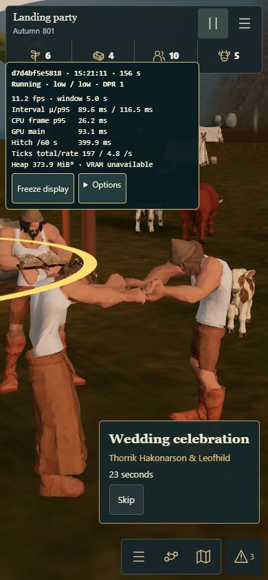

Wedding portrait continuation
Export your own campaign first, then import the unchanged original wedding checkpoint through the start menu: Recover or import → Import campaign → Continue campaign.
- Use portrait orientation. At the selected campfire choose Wedding celebration → Support gathering → Sponsor · 24 Food.
- The wedding should remain active while paused. Press Start to let residents run to the ceremony and perform.
- Try pause/resume, rotating the device and Skip. The ordinary camera and controls should restore safely.
This test save contains exactly 24 Food and the eight attendees cost 24 Food. “Food stocks are empty” is the expected stock notice after payment; it must not stop the wedding. No additional Food has been added to hide that notice.
Optional performance diagnostics
Recorded browser verification
The fixed production scene stayed active in portrait after payment, performed with six residents and three instruments, survived rotation/pause, and completed normally. These are responsive browser checks; the physical iPhone recheck is separate.

Playing state · Pause and rotation · Natural cleanup and restored camera · Exact runtime hashes